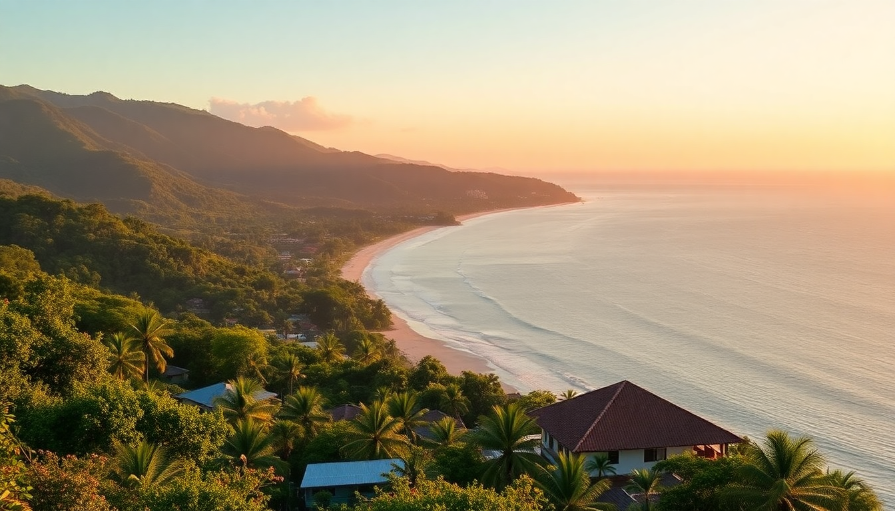

Where to Stay in Manuel Antonio: Best Hotels for Every Budget

I pulled into Manuel Antonio after a sweaty bus ride from San José, and within an hour I understood why people either love it or leave it. The main road is a single winding strip of hostels, sodas, and souvenir shops, sandwiched between dense jungle and the Pacific. But the hotels here vary wildly — you can sleep in a treehouse for $40 a night or a cliffside villa for $800. This guide breaks down where I’d actually stay based on your budget, travel style, and tolerance for howler monkeys at 5 AM.
What’s the difference between staying in Quepos vs. Manuel Antonio proper?
Most first-timers don’t realize these are two separate spots. Quepos is the small town about 10 minutes north of the national park entrance — it’s grittier, more local, and significantly cheaper. We stayed at Hotel Sierra in Quepos for two nights and paid $65 a night for a clean, air-conditioned room with a pool that overlooked the marina. It’s not fancy, but it’s five minutes from the bus stop and surrounded by cheap sodas like Soda El Banco where a casado runs $6.
- Quepos — budget-friendly, real town vibe, walkable to grocery stores and bus terminal
- Manuel Antonio — the strip from the park entrance down to the beach, more expensive, more tourist-oriented
- The hill roads (e.g., road to Tulemar) — steep, narrow, but where the luxury jungle lodges sit
If you’re on a tight budget, stay in Quepos and take the 500-colon bus to the park each morning. If you want to roll out of bed and onto the sand, pay up for Manuel Antonio proper.
Which budget hotels in Manuel Antonio are actually worth it?
Skip the really cheap hostels near the bus station in Quepos — they’re loud and the AC is usually broken. Instead, I recommend Hostel Vista Serena in Manuel Antonio. It’s a 10-minute uphill walk from the main road, but the view from the common deck is insane — you can see the ocean through the trees. Dorm beds run $18–22, and private rooms with shared bath are around $45. The owners organize group night tours to see frogs and snakes, which is a solid deal.
For a private room with more comfort, Hotel La Colina is a reliable mid-range pick. We paid $90 a night for a double with a balcony facing the jungle. The pool is small but cold, and the included breakfast (eggs, gallo pinto, fresh fruit) is better than most. It’s a 15-minute walk to the park entrance.
- Hostel Vista Serena — best budget view in town, book the private room
- Hotel La Colina — solid mid-range, good breakfast, book directly for a discount
- Backpackers Hostel Quepos — fine for a single night, but the road noise is bad
What are the best mid-range hotels in Manuel Antonio?
The mid-range sweet spot is $120–$200 a night, and the best value we found was Hotel Costa Verde. You’ve probably seen photos of the airplane suite — yes, it’s a refurbished 1960s Fairchild fuselage perched in the jungle. We didn’t stay in that room (it was booked), but the standard hillside studios are spacious, have kitchenettes, and come with a shared infinity pool that looks over the treetops. The downside: the property is massive and you’ll walk up and down steep paths constantly.
Another strong option is Tulemar Resort, but here’s the honest take: it’s marketed as a resort but it’s really a gated community of private villas and bungalows. We stayed in a Tulemar Bungalow for $175 a night, and it came with a private plunge pool and a golf cart to get around the property. The beach access is exclusive and rarely crowded. The catch is that you’re isolated from the main road — you need a car or pay for their shuttle to get dinner.
- Hotel Costa Verde — iconic airplane room, great views, steep hills
- Tulemar Bungalows — private and quiet, book the golf cart option
- Hotel Playa Espadilla — right across from the beach, basic but clean, $130 a night
Which luxury hotels are worth the splurge?
If you’re going to drop $300+ a night, make it count. Arenas del Mar is the one I’d book again. It’s a 38-room eco-lodge perched on a private hill with two beaches (one is a nesting site for turtles). We walked down to Playa Playitas at sunset and saw maybe five other people. The rooms are huge, with outdoor showers and plunge pools. Breakfast at El Mirador restaurant is included, and the food is legitimately good — try the chilaquiles.
Makanda by the Sea is the other splurge option, but I’ll be blunt: it’s overpriced for what it is. The adult-only policy is nice, but the rooms are dated and the service felt indifferent. Save your money for Arenas del Mar or go even higher-end to Los Altos Beach Resort & Spa, where the rooms start at $500 but include a personal concierge and a massive private beach club.
- Arenas del Mar — best eco-luxury, two private beaches, book the ocean-view suite
- Makanda by the Sea — adult-only, decent but not worth the hype
- Los Altos Beach Resort & Spa — top-tier luxury, book for a special occasion
Where should I stay for easy access to Manuel Antonio National Park?
The park entrance is at the end of the main road, so anything within a 10-minute walk is ideal. Hotel Mono Azul is literally across the street from the entrance — we stayed there for two nights and could hear the monkeys in the trees above the pool. Rooms are basic (think motel-level), but the location is unbeatable. It’s $110 a night and includes a simple breakfast.
If you want something nicer, Shana by the Beach is a 5-minute walk from the park. We paid $160 a night for a deluxe room with a balcony overlooking the pool. The on-site restaurant Kapi Kapi is one of the better dinner spots in town — the seafood ceviche is excellent. Just know that the road in front is busy, so ask for a room at the back.
- Hotel Mono Azul — cheapest park-adjacent option, book the garden room
- Shana by the Beach — comfortable mid-range, eat at Kapi Kapi
- Park entrance area — no restaurants after 8 PM, so stock snacks
Is it better to stay near the beach or in the jungle?
This depends on your priority. If you want to swim without a 20-minute walk, stay at Playa Espadilla — the main public beach. Hotel Playa Espadilla is literally on the sand, and we spent a whole afternoon there without leaving the property. The water is swimmable (rip currents are mild here compared to other Costa Rican beaches), and there are vendors selling fresh coconuts and ceviche right on the sand.
Jungle stays, like Hotel Costa Verde or Tulemar, put you deeper in the canopy. You’ll see toucans and sloths from your balcony, but you’ll need to walk or drive to get to the beach. We preferred the jungle for wildlife, but my partner missed being able to walk straight onto the sand. If you can, split your stay: two nights jungle, two nights beach.
- Playa Espadilla — best beach access, busy during peak hours
- Jungle hillside — better wildlife views, quieter at night
- Split your stay — I’d do 2 nights jungle, 2 nights beach
FAQ
Is Manuel Antonio safe for solo travelers? Yes, I felt safe walking the main road alone at night, but I’d avoid the unlit side roads after dark. Stick to the main strip between the park entrance and Quepos, and keep valuables in your hotel safe. Petty theft from parked cars is common, so don’t leave anything visible in a rental.
Do I need a car in Manuel Antonio? Not really. The public bus from Quepos to the park runs every 15 minutes and costs 500 colons ($1). Taxis are $5–10 for most trips. A car is useful for exploring nearby beaches like Playa Biesanz, but parking at hotels often costs extra and the roads are steep and narrow.
What’s the best time of year to visit Manuel Antonio? Dry season (December to April) is peak — expect crowded beaches and higher hotel prices. I went in late November (transition month) and had sunny mornings with short afternoon showers. Green season (May to November) is quieter and cheaper, but some hotels close for maintenance in October.
Conclusion
- Budget travelers — stay in Quepos at Hotel Sierra or Hostel Vista Serena for under $70 a night
- Mid-range seekers — Hotel Costa Verde or Tulemar Bungalows offer the best value at $120–$200
- Luxury splurgers — Arenas del Mar is the one I’d book again over Makanda or Los Altos
- Park access — Hotel Mono Azul is the cheapest walk-to-the-gate option
- Beach vs. jungle — split your stay if you can; otherwise choose based on whether you want swim-in convenience or wildlife from your balcony